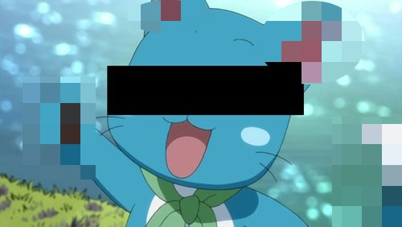
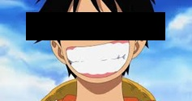
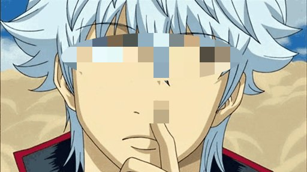

Tilbakemelding?
Se hva andre har sagt om oss

Nyan~! Jeg hadde det så gøy hos Craftsvilla! Jeg lærte masse om maling og mosaikk - det var kreativt, koselig og superinspirerende! Nå kan jeg lage egne kunstverk, hihi! Tusen takk for et purrfekt kurs! Gleder meg til neste gang, nyaa~!
Jeg hadde det kjempegøy hos Craftsvilla! Jeg lærte å male, lage mosaikk og bruke fantasien min til å lage fine kunstverk! Det var nesten like gøy som å fiske! Takk for et fantastisk kurs - jeg kommer gjerne tilbake! Aye~!
Det var kjempegøy hos Craftsvilla! Jeg lærte å lage kule ting av tre - skjære, spikke og bygge! Nå kan jeg lage mitt eget sjørøverskip i miniatyr, nesten! Det var supermoro og jeg ble skikkelig sulten etterpå! Gleder meg til å gjøre det igjen!
Jeg trodde det bare var gratis snacks, men endte opp med å lære å tegne hos Craftsvilla. Ikke verst, faktisk. Nå kan jeg tegne noe annet enn bare penisdoodles på skrivepulten. Litt avslappende også... nesten som å lese Jump uten deadlines. Anbefales… tror jeg.